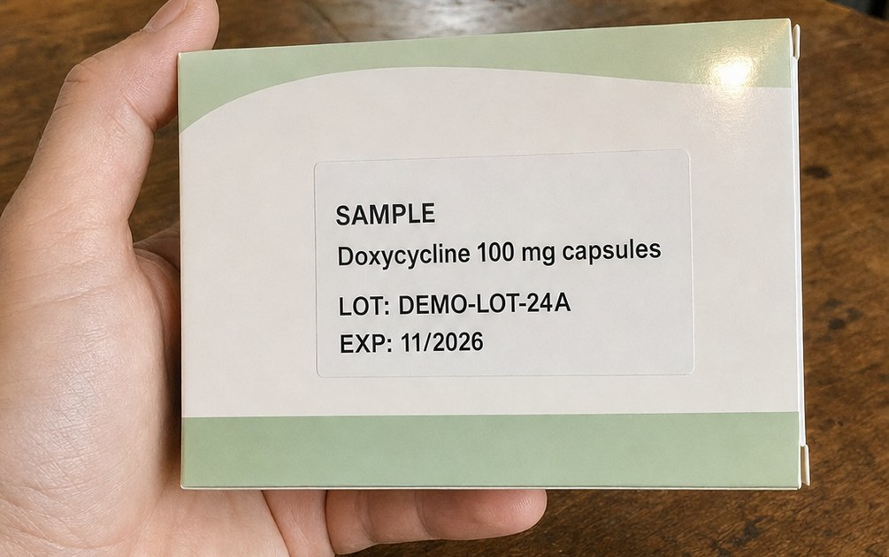

The states every on-device model goes through, applied to AgapayMo's three phone models. Route /prepare for L1–L4. The “Runs on this phone” line appears only once the AI is ready (L5 onward). MB figures come from the model registry (offlineModels.ts); only the box reader's 26.9 MB is measured so far, the other two sizes are placeholders. Laptop model states are in Laptop, screen 19.
M4
Pass 2 · First paint
The bare “Loading…” route fallback becomes a paper screen. It appears only if loading takes longer than 300 ms, by a stepped visibility delay, never a fade. Phone and laptop share it (centered in the window on the laptop).
M4Opening AgapayMoP0
I1 tile at 40 px, a spinning circle-notch, “Opening AgapayMo…” in 16/24 --ink-2. Nothing else, no nav.
Opening AgapayMo…
Delay
animation: show 0s 300ms both with @keyframes show { from { visibility: hidden } to { visibility: visible } }. Fast loads never flash it.
Motion
M1 spin (--dur-loop, linear) while the chunk loads. Still: static icon plus the words.
Flag
The global reduced-motion rule zeroes delays, which would make it show at once under reduced motion. Mark it .motion-safe so the 300 ms wait (a visibility step, not motion) survives.
L1–L4
First run: download, space, keep, getting ready
Shown once, on the first visit with a signal. Plain words: “the AI”, never “model weights” or “WASM”.
L1aFirst run: what and why
Download first shows L3 (one line about keeping the files), then starts L1b.
Get AgapayMo ready for no signal
Download the AI once, so AgapayMo works without internet. After this, nothing you do needs a signal.
Breathing check (Hinga)
Counts breaths with the camera
15.2 MB
Crying check
Hears if the child is crying
13.0 MB
Medicine-box reader
Reads the lot and expiry
26.9 MB
Total, one time55.1 MB
Use Wi-Fi if you can. This phone has 2.1 GB free.
L1bDownloading, 1 of 3
One bar for the whole download, MB and %. Cancel keeps finished parts.
Downloading the AI
So AgapayMo works without internet. Keep this screen open.
1 of 3: Breathing check9.8 / 55.1 MB
17%
Breathing check (Hinga)Downloading
Crying checkWaiting
Medicine-box readerWaiting
L2Not enough space
From navigator.storage.estimate(), checked before downloading. Everything except the camera AI still works.
Not enough space on this phone
AgapayMo needs
55.1 MB
Free now
21.4 MB
Free up about 34 MB, then check again. Deleting old videos or an app you don't use is usually enough.
L3Keep-the-download prompt
Continue calls navigator.storage.persist(). Some browsers decide silently; the download starts either way.
Get AgapayMo ready for no signal
Download the AI once, so AgapayMo works without internet.
Next, your browser may ask to keep AgapayMo's files
Tap Allow, so the AI isn't deleted when the phone runs low on space.
L4Getting ready
After the download, and on later launches if loading takes over 1 s. Indeterminate; no buttons. Then Home (1a).
Getting the AI ready
Loading it into this phone's memory. This takes a few seconds.
L5–L7
Ready, working, offline
The ready and offline indicators are one quiet line under the title (see Home 1a). Each opens a sheet. Working uses the box reader as the example; Hinga's working state is its 60-second count (Phone 1, 4a).
L5Ready: “Runs on this phone” sheet
Opened by tapping the indicator. The only sheet that uses the lagoon accent.
Maligaya-D
San Isidro Demo · Sample data
Runs on this phone
The AI is saved on this phone and works with no signal. Your records stay here. Only counts leave, in the QR.
Breathing check (Hinga)Ready
Crying checkReady
Medicine-box readerReady
L6aWorking: reading one box
Two real steps (find text, read text), so the bar is honest. Runs in a Web Worker; Cancel stops it.

Reading the box
Finding the textstep 1 of 2
Reading on this phone. The photo is deleted after.
L6bWorking: result appearing
Fields fill in as they are read, then the screen becomes the review (Phone 3, 11a). Nothing saves without Confirm.
Reading the box
Reading the textstep 2 of 2
MedicineSure
Doxycycline 100 mg
Lot numberPlease check
DEMO-L0T-24A
Expiry
L7Offline sheet
Opened from “Offline”. Calm on purpose: offline is the normal case.
Maligaya-D
San Isidro Demo · Sample data
Offline. Everything here still works.
Breathing checks, the watch list, stock and the QR all work with no signal. Only the first download and app updates need internet.
L8–L9
Can't run it, and errors with one next step
Every error says what happened in one line and gives one next step. No codes on screen (log them to the console). The lighter mode is counting by hand: the WHO method BHWs are trained in, with the app keeping time and applying the cut-off.
L8aThis phone can't run it
When pickBackend() returns none, or loading fails twice. The reason line uses the capability check's result.
This phone can't run the camera check
Its browser can't run the breathing AI. Updating Chrome or Safari may fix this.
You can still
Count breaths by hand with a timer
Keep the flood watch list
Add medicine stock by typing
Send the QR to the RHU
L8bLighter mode: count by hand
Tap once per breath for 60 s. At 0:00 it shows the same result screens (6a, 7a), marked “counted by hand”.
0:29left
Count by hand
Watch the chest rise. Tap once for each breath.
1 to 4 years · fast is 40 or more a minute
L9aError: download stopped
Finished files stay in the cache; Try again resumes with the next one.
The download stopped
The signal dropped at 9.8 of 55.1 MB. Connect to Wi-Fi or mobile data, then try again. What already downloaded is kept.
9.8 / 55.1 MB · 17%
L9bError: AI didn't load
Files are cached but the runtime failed (often memory). A second failure leads to L8a.
The breathing check couldn't start
Its files are on this phone, but it didn't load. Closing other apps usually fixes this.
L9cError: couldn't read the label
Also Stock screen 11, error state. No text found, or no drug, lot or expiry in it.
Couldn't read the label
The text was too blurry or shiny. Try again, or type it in.
L10 · 15
What stays on this phone (Privacy & AI)
Route /privacy, from the shield on Home and from L5. This is also brief screen 15. Plain sections, no cards. L11 (AI result review) is the stock review: Phone 3, 11a.
L10Privacy & AI (full scroll)
Tall frame shows the whole scroll.
Privacy & AI
What runs on this phone
Breathing check (Hinga)
Uses the camera to count breaths. The video is never saved.
Crying check
Listens for crying during a count. Sound is never saved.
Medicine-box reader
Reads the lot and expiry from a photo. The photo is deleted after reading.
Your records
Residents, floods, checks and stock stay in this phone's browser storage.
What leaves this phone
Only the counts in the QR code, and only when you show it to the municipal laptop. No names, birthdays or addresses. Counts from 1 to 4 show as “<5”.
What the AI can get wrong
It can miscount breaths if the child moves or cries, or the light is poor. When it can tell, it stops and says why.
It can misread a lot number or expiry. You check every field before anything is saved.
On the municipal laptop, AI drafts the plan's wording. The officer checks it before approving.
AgapayMo never diagnoses and never suggests a dose. It counts, flags and refers.
Research prototype, not a registered medical device. San Isidro Demo and every record in it are invented sample data.